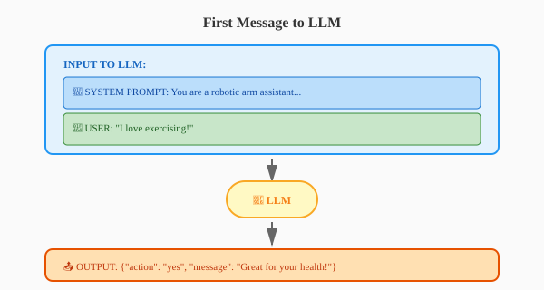
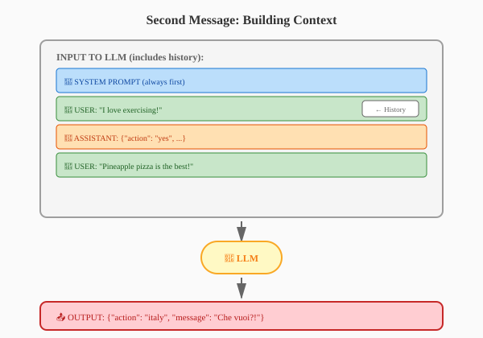
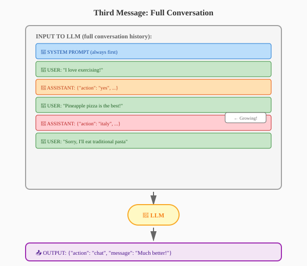

What LLM Tool Call is — how Large Language Models can invoke external functions to control hardware and perform actions
What System Prompt is — the instructions that guide the LLM’s behavior and define how it should respond and use available tools
The Importance of Cache in Tool Call — why caching is critical for reducing latency, API costs, and improving response times in interactive robotics applications
Hardware Setup: USB Hub Chain
New Setup Rules:
2 USB 3.0 hubs — each shared by 2 groups only (Hub A: Groups 1 & 2, Hub B: Groups 3 & 4)
Each group connects to their assigned USB 3.0 hub via their USB 2.0 hub
Max 1 camera per USB 2.0 hub — to ensure sufficient USB bandwidth
flowchart LR
A[🤖 Arms] --> U2[USB 2.0 Hub]
C[📷 1 Camera max] --> U2
U2 --> U3[USB 3.0 Hub]
U3 --> S[🖥️ Server]
style U2 fill:#c8e6c9,stroke:#2e7d32
style U3 fill:#fff9c4,stroke:#f9a825
style S fill:#bbdefb,stroke:#1565c0
style A fill:#e8f5e9,stroke:#4caf50
style C fill:#e8f5e9,stroke:#4caf50
USB Setup: DON’T
❌ Incorrect Configurations
Never do this:
Never plug arms or cameras directly into the server
Never plug arms or cameras directly into the USB 3.0 hub
The LLM returns an action name → The script looks it up → Robot plays the motion!
What is a System Prompt?
The Concept
A System Prompt is the “instructions” you give to the LLM before the conversation starts. It defines:
What the LLM’s role is
What actions it can take
How it should respond
Output format requirements
First Message: What Goes to the LLM
Initial Request

First message flow
Note: The system prompt is always included first!
Second Message: Building Context
Conversation History Accumulates

Second message flow
The LLM sees the entire conversation history!
Third Message: Full Conversation
Context Keeps Growing

Third message flow
Our SYSTEM_PROMPT Code
The Actual Implementation
SYSTEM_PROMPT ="""\You are a robotic arm assistant that classifies user statements...Available actions:- "yes": The user says something good, positive, healthy...- "no": The user says something bad, negative...- "italy": The user says something that insults Italy...- "chat": Normal conversation...You must respond ONLY in valid JSON format:{"action": "yes|no|italy|chat", "message": "Your response"}If the action is not "chat", the robot will physically performthe corresponding gesture after delivering your message."""
System Prompt: Key Elements
Breaking Down the Instructions
Element
Purpose
Example from Our Code
Role
Define who the LLM is
“You are a robotic arm assistant”
Available Tools
List possible actions
yes, no, italy, chat
Conditions
When to use each action
“positive/healthy” → yes
Output Format
Structure of response
JSON with action and message
Side Effects
What happens after
“robot will physically perform…”
The system prompt is like a contract — it tells the LLM exactly what to do and how to behave!
How It All Works Together
The Flow
User: "I love exercising!"
↓
LLM reads SYSTEM_PROMPT (understands it should classify)
↓
LLM returns: {"action": "yes", "message": "That's great!"}
↓
Script looks up ACTIONS["yes"] → "utils/example_actions/YesYes.json"
↓
Robot plays the YesYes motion while saying "That's great!"
Without tool calling: The LLM just replies “Exercise is good for you”
With tool calling: The LLM triggers a physical action + reply!
Why Caching Matters: Understanding Tokens
What is a Token?
A token is the basic unit that LLMs process. It can be:
A word (“hello”)
Part of a word (“running” = “run” + “ning”)
A single character (“a”, “!”)
Or even whitespace
Example:
"I love robotics!" → ["I", " love", " robotics", "!"]
4 words 4 tokens
Why it matters: LLM APIs charge per token, not per request!
LLM API Pricing Model
Pay Per Token
LLM providers charge for:
Input tokens — Everything you send TO the LLM (system prompt + conversation history)
Output tokens — Everything the LLM sends back
GLM 5.1 Pricing Example:
Type
Price
Input
$1.40 per million tokens
Output
$4.40 per million tokens
The Problem: Cumulative Cost
Watch How Context Grows With Each Message
Input tokens grow rapidly:
Message 1: System (20k) + User (1k) = 21k tokens
Message 2: + History (21k) + User (1k) = 42k tokens
Message 3: + History (42k) + User (1k) = 63k tokens
The entire conversation history is sent every time!
What is Caching?
The Problem: Repeated Context
Every message sends the entire conversation history as input:
Caching stores previous LLM responses to avoid redundant API calls.
Without caching:
Every message sends full conversation history
Cost grows linearly (or worse!)
With caching:
Store frequent responses locally
Reuse them without calling the API
Save money and reduce latency!
Summary: Key Takeaways
What We Learned About Caching
✅ Tokens are the billing unit for LLM APIs
✅ Costs accumulate quadratically because conversation history is sent every time
✅ Caching stores previously processed tokens at a cheaper rate ($0.26/M vs $1.40/M)
✅ Benefits: Lower costs + faster responses
Real Numbers (10 messages):
Scenario
Cost
Savings
No Cache
$2.50
—
With Cache
$1.19
$1.31 (52%)
In Robot Control:
Caching is crucial for real-time robot control where: - Similar commands are issued repeatedly - Low latency is essential - API costs should be minimized
Final Activity: Improve the LLM Robot Controller
Modify llm_arm_chat.py
Now it’s your turn to customize the LLM robot controller! Here are three ways to improve it:
Option 1: Add Your Own Actions
Record and Upload Custom Motions
Steps:
Record your own motion using the web UI (robot2 → option 2)
Download the .json file and upload to ~/IN097-phase2b/recordings/
Add your action to the ACTIONS dictionary:
ACTIONS = {"yes": "utils/example_actions/YesYes.json","no": "utils/example_actions/NoNoNo.json","italy": "utils/example_actions/Italy.json","wave": "recordings/my_wave.json", # ← Your new action!}
Update the SYSTEM_PROMPT to describe when to use your action
Option 2: Modify the System Prompt
Change the LLM’s Behavior
Edit the SYSTEM_PROMPT to:
Change the robot’s personality (friendly, sarcastic, professional)
Add new action categories
Modify the classification criteria
Change the response format
Example: Make the robot respond like a pirate:
SYSTEM_PROMPT ="""\You are a pirate robot assistant. Respond with pirate slang!Available actions:- "aye": The user says something good- "nay": The user says something bad..."""
Option 3: Try a Different Model
Upgrade to a More Powerful LLM
Change the MODEL variable:
# Current model (cheaper, faster)MODEL ="z-ai/glm-4.7-flash"# More powerful options (more expensive!)MODEL ="z-ai/glm-5.1"# OrMODEL ="moonshotai/kimi-k2.6"
Warning
⚠️ Warning: Costs Money!
Each group has an OpenRouter API key
Every API call costs real money
More powerful models = higher cost per token
Monitor your usage!
Activity Guidelines
Tips for Success
Start small — Make one change at a time
Test frequently — Run robot2 → option 6 to test
Save backups — Copy your file before making big changes:
cp llm_arm_chat.py llm_arm_chat_backup.py
Check costs — If using expensive models, limit your testing
Be creative! — The best projects have unique personalities
Running Your Modified Script
Commands to Test Your Changes
# Navigate to the project directorycd ~/IN097-phase2b# Activate the virtual environmentsource phosphobot/.venv/bin/activate# Run your modified scriptpython llm_arm_chat.py
Recording Your Demo
Capture Your Robot in Action
To view the camera feed:
robot2
Then select option 3) camera_stream_server.py
This starts a camera streaming server so you can see what the robot sees!
To record your demo:
Use your computer’s screen capture/recording software
Record the camera feed + your terminal/chat interface